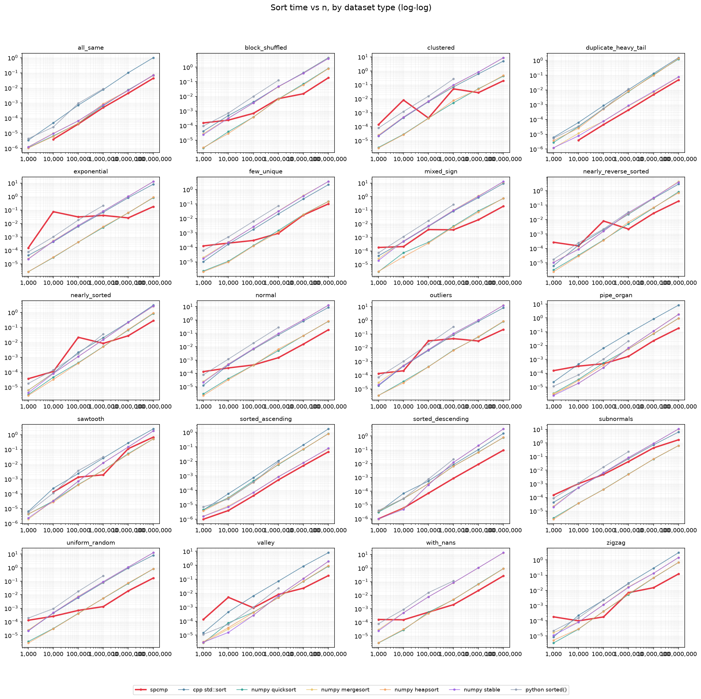

SPCMP
Your float32 data compresses. SPCMP also gives you a Merkle root. Same size reduction, plus tamper-evidence.
Float32 Container & Canonicalization
Is this the same data? Float32 results differ across hardware, and one dataset can be stored in many byte forms: signed zeros, NaN payloads, different orderings. Hashing the bytes does not answer the question.
Has it changed since? Compression is one-way, so nothing proves what comes out is what went in. And encryption without authentication can hide tampering until the data is read.
SPCMP gives a float32 dataset one canonical, reversible form with a built-in commitment to its content. Same data, same container. Altered data, failed verification.
- Canonical: one deterministic form per dataset, identical across machines. The cross-hardware runs are in the Test Reports.
- Tamper-evident: any change to the decoded data fails verification. We flipped every bit of a 1,000-element file: 38,430 of 38,440 flips were rejected, and the 10 that passed decode to identical content. The test →
- Reversible:
unsortreconstructs the exact original bytes. - Not a speed tax: at 100 million elements SPCMP is faster than
numpy.quicksorton 18 of 20 dataset types in both runs: 4.65x and 4.40x on uniform and normal data (CPU run), 4.77x and 4.31x (GPU run), up to 27.09x on duplicate-heavy data. It is slower on subnormals and sawtooth, and below roughly 100,000 elements. These times include SPCMP’s compression and its unsort record, which the other sorts do not do. Charts below.
Where it stops: the commitment lives inside the file, so on its own it cannot say who made the file. Authenticated Verification adds that: a detached signature over the finished file, checked before anything else. See Three Layers of Integrity.
The 4 Commands
# 1. Sort and compress the original array ./spcmp sort input.bin # 2. Verify the Merkle commitment python3 verify.py input.sorted.pcmp --info # 3. Reconstruct the original array ./spcmp unsort input # 4. Compare for byte-for-byte lossless recovery cmp input.bin input.unsorted.bin
verify.py output
$ python3 verify.py model_weights_1m.sorted.pcmp [OK] model_weights_1m.sorted.pcmp n=1000000 $ python3 verify.py model_weights_1m_altered.sorted.pcmp [FAIL] model_weights_1m_altered.sorted.pcmp n=1000000 # exit status 0 = accepted, 1 = rejected, so it drops straight into a pipeline step
Layer 2: Sign and Verify with verify_v2.py
Continues from the sorted file above. Sign it once with your private key, then verify with the matching public key. verify_v2.py authenticates the exact bytes first, then runs the same logical verification as verify.py.
# 5. Sign the sorted file (prompts for the private-key passphrase) python3 pcmp_sign.py sign input.sorted.pcmp \ --private-key pcmp_ed25519_private.pem \ --key-id my-prod-key Signed artifact: input.sorted.pcmp SHA-256: 64c9031104bc… Key ID: my-prod-key Manifest: input.sorted.pcmp.manifest.json # 6. Verify authenticity first, then the contents python3 verify_v2.py input.sorted.pcmp \ --public-key pcmp_ed25519_public.pem \ --expected-key-id my-prod-key \ --info Artifact authentication: PASS Signature: PASS Exact-byte SHA-256: PASS Key ID: my-prod-key SPCMP logical verification: PASS Combined result: ACCEPT
How It Scales
Watch the same job get bigger. Each lane shows how many elements per second an algorithm sustains as the dataset grows from 1,000 to 100,000,000. SPCMP’s figure covers sorting, compression and building the unsort record. The others only sort.
Measured at 1,000, 10,000, 100,000, 1,000,000, 10,000,000 and 100,000,000 elements. The glide between those sizes is interpolated. Throughput is total elements divided by total time across the chosen dataset types. .
Speed Simulation
Pick a dataset type and a size, then race SPCMP against numpy quicksort, numpy mergesort and C++ std::sort. Every bar is driven by the recorded times from the result files below, replayed with the slowest lane stretched to a few seconds. It is a replay, not a live benchmark.
Strip above: SPCMP speedup over numpy quicksort at each size for the selected type. Red means SPCMP was slower. . A time shown as <1 µs is below the timer resolution of the run.
Performance Benchmarks
Reversibility and cryptographic proof should not cost you speed. We benchmarked SPCMP against numpy quicksort, mergesort, heapsort and stable, C++ std::sort, and Python sorted() across sizes from 1,000 to 100,000,000 elements and 20 dataset types. Times are best-of-N; speedup is numpy quicksort time divided by SPCMP-reported time. SPCMP’s time covers three jobs: sorting, compression and building the unsort record. The other algorithms only sort. At 1,000 elements SPCMP takes roughly 90 to 270 µs on both runs, against about 3 µs for numpy quicksort, so numpy wins there. Against numpy quicksort the crossover sits around 100,000 to 1,000,000 elements on the CPU run (11 of 20 types faster at 100,000, 17 of 20 at 1,000,000) and around 1,000,000 to 10,000,000 elements on the GPU run (6 of 20 at 100,000, 12 of 20 at 1,000,000, 18 of 20 at 10,000,000).



Hover to spread the deck. Click a chart to inspect it, then use the arrow keys to move through them. The run toggle above switches every chart.
Test Suite & Validation
- SPCMP: 42/42 adversarial assertions passed (NaNs, subnormals, extreme boundaries).
Test Reports
Primary source documents. Not marketing copy.
| Report | Scope | Link |
|---|---|---|
| PCMP / SPCMP Verification Report 42/42 PASS | Every IEEE-754 edge case and degenerate array shape, checked against an independent Python oracle | |
| SPCMP Cross-Hardware Verification | Google CPU, TPU, GPU, and a native GPU node -- identical Merkle root and hash on all four | |
| Cross-Machine Determinism | 20 sort runs, 4 heterogeneous machines, 5 files each -- zero divergent hashes | |
| SPCMP Determinism Report | Top-k / bottom-k convergence; documents the honest scalar-reduction limit | |
| Aerospace Verification Proof | 40/40 assertions -- radiation bit-flip absorption, telemetry compression, GNC-loop determinism | |
| Scale Test Report | 32 runs, 100k to 1B float32 elements, 8 data patterns -- zero failures | |
| Samayuktam Sorting Benchmark | CPU/GPU sort timing vs NumPy quicksort/mergesort/stable; 4.3–4.8× on uniform and normal at 100M elements, up to 27× on duplicate_heavy_tail |